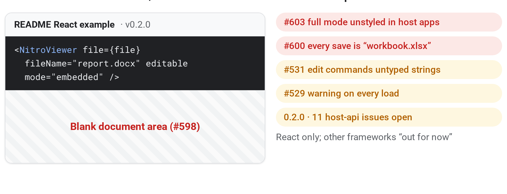
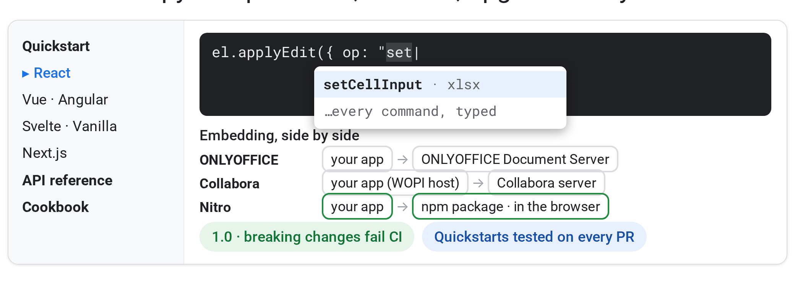
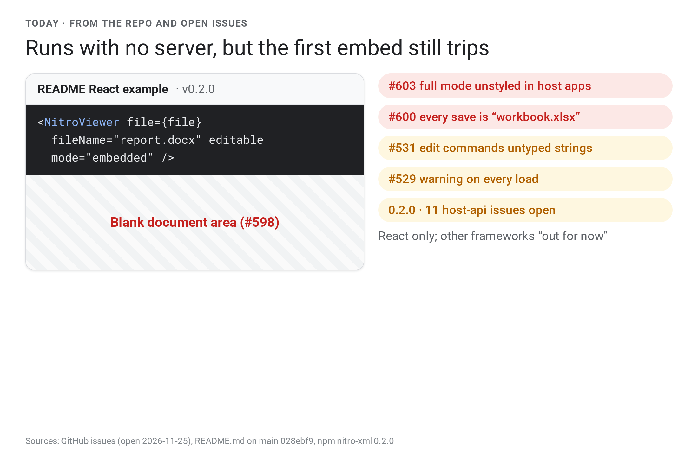
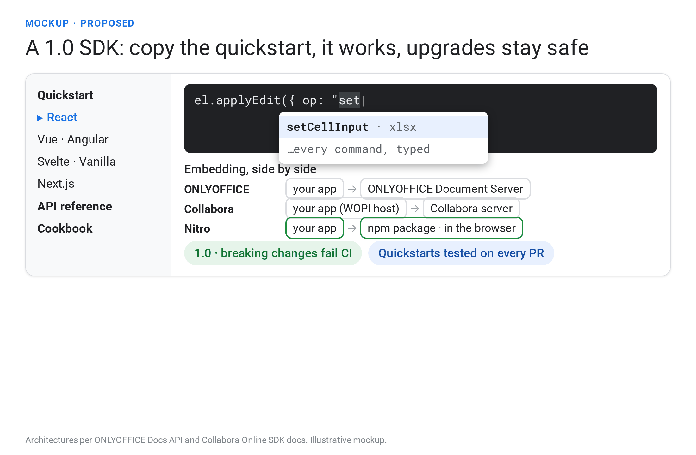

Embed Office documents in ten minutes with no document server: a stable 1.0 host SDK with typed commands and events, real docs, and adapters beyond React
New strategic bet (2026-11-25). Absorbs embed DX issues #598, #600, #603, #529, #531, #532 and #574.
Approve: tap 👍 on the issue · Decline: tap 👎
Close-up of the change




Full screen


Today Nitro runs fully in the browser, which no server-based rival does, but embedding it still trips on rough edges: the README React example shows a blank area (#598), full mode renders unstyled in host apps (#603), every save is named workbook.xlsx (#600), and edit commands are untyped strings (#531). The API is 0.x, with 11 host-api issues open.


Mockup: a docs site with a ten-minute quickstart per framework, typed applyEdit commands and events with autocomplete, and a 1.0 promise: no breaking change without a major version, checked by CI.
Tap an image to open it full size.
Why
The other open embeddable office suites need servers. ONLYOFFICE's editor loads its API script from your own ONLYOFFICE Document Server. Collabora Online runs in an iframe from a Collabora server that talks to your storage over WOPI. Nitro is an npm package that opens, edits and saves entirely in the browser. That is a real moat, but only if embedding is boring: copy the quickstart, it works, it stays working on upgrade. Today the host API grows feature by feature (#561–#575, #590, #614, #620, #630) while the basics in the README still break. This bet makes the host contract a product: typed, documented, versioned and tested from a fresh app on every PR.
Who it wins
Embedding developers, Jared's company included: a React preview app over AWS EFS should be a quickstart, not a debugging session, and upgrades should be safe. It also wins teams that can't run a document server for cost, security or air-gap reasons. Users win indirectly: fewer broken embeds.
Phased plan
Each milestone ships on its own.
- M1 · Ten-minute quickstarts that work (about 1 week)Fix the embed blockers (#598, #603, #600, #529, #532). CI builds the README's vanilla, React and Next.js examples in fresh Vite and Next apps from the packed tarball and checks that they render all three formats and save with the right name.
- M2 · Typed commands and events (1–2 weeks)applyEdit commands and nitro-* events become typed unions in index.d.ts with autocomplete. Unknown commands list the valid ones (#531). An API reference is generated from the types into the docs site, with a cookbook (read-only preview, dirty tracking, custom ribbon, highlights).
- M3 · 1.0 contract (about 1 week)An API report checked in and diffed by CI, so any breaking change fails without a major bump. A written deprecation policy, the stable data-testid contract (#574), and a CHANGELOG section per public API change.
- M4 · Adapters beyond React (1 week)Thin Vue, Angular and Svelte wrappers over the web component (props, events, ref methods), each with a quickstart that runs in CI. This reverses the README's "framework bindings beyond React: out for now" line.
Evidence
- Embed-blocking DX issues still open after the v0.2.0 consumer test: #598 (README React example renders a blank area), #603 (full mode unstyled, handle untyped, onChange not fired on save), #600 (every save named workbook.xlsx), #531 (applyEdit commands undocumented and stringly typed), #529 (deprecation warning on every load), #532 (844 kB chunk).Source: GitHub issues, open on 2026-11-25; BACKLOG.md developer pass on 2026-11-23
- Host API demand: 18 issues labelled host-api (7 closed, 11 open), plus proposals #590, #614, #620 and #630.Source: GitHub label host-api, 2026-11-25
- The README lists "Framework bindings beyond React, the web component and the headless API" as out of scope for now. The package is at 0.2.0.Source: README.md, main 028ebf9; npm nitro-xml 0.2.0
- ONLYOFFICE Docs: DocsAPI.DocEditor is loaded from https://documentserver/web-apps/apps/api/documents/api.js on your ONLYOFFICE Docs server.Source: api.onlyoffice.com/docs/docs-api/usage-api/doceditor
- Collabora Online: the host serves an iframe from the Collabora server's /hosting/discovery URL and implements WOPI CheckFileInfo, GetFile and PutFile; Collabora recommends a dedicated server.Source: Collabora Online SDK examples (github.com/CollaboraOnline/collabora-online-sdk-examples) and Collabora's WOPI integration guide
Definition of done
- The README vanilla, React and Next.js quickstarts build from the packed tarball in CI and render a docx, an xlsx and a pptx. Saving keeps the opened file name.
- Every applyEdit command and nitro-* event is typed in index.d.ts. Unknown commands list the valid ones. The generated API reference and cookbook are live on the docs site.
- A checked-in API report fails CI on breaking changes without a major version. Deprecation policy and data-testid contract (#574) are published.
- Vue, Angular and Svelte adapters each pass a fresh-app CI test.
- #598, #600, #603, #529, #531 and #532 closed. Eager loader under 17,408 B. All required checks green.
Approve: tap 👍 on the issue · Decline: tap 👎